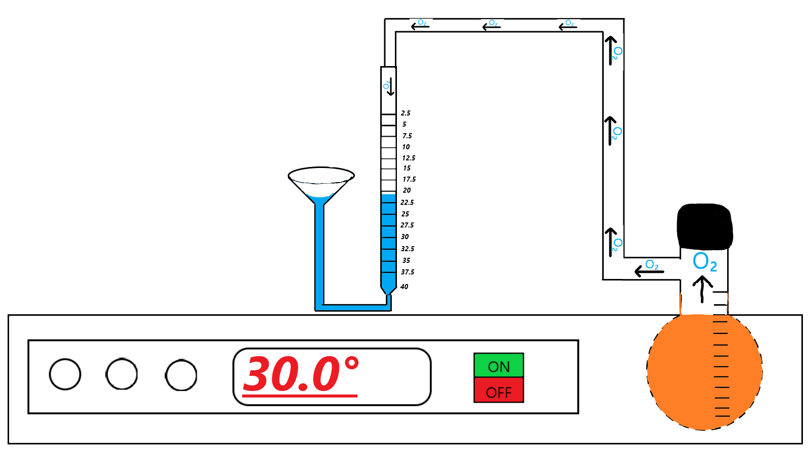

Затем так же, как в
первом опыте, залить в колбу 1мл Н2О2 и замерить через каждую минуту (в
течение 6 минут) объем выделившегося кислорода. Полученные результаты
записать в таблицу. (Для этого нажмите на секундомер)

3 минуты
Объем выделившегося кислорода при разложении Н2О2 при температурe 30° C
| Τмин |
1 |
2 |
3 |
4 |
5 |
6 |
| Vмл |
6 |
12 |
21 |
|
|
|